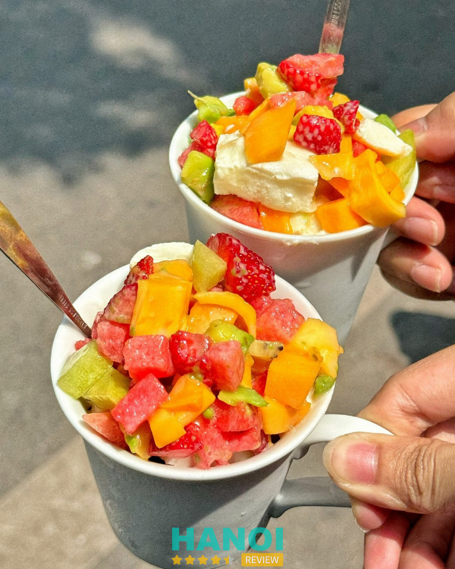
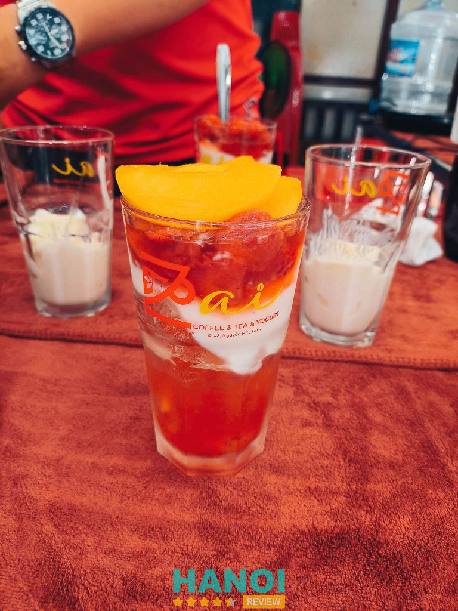
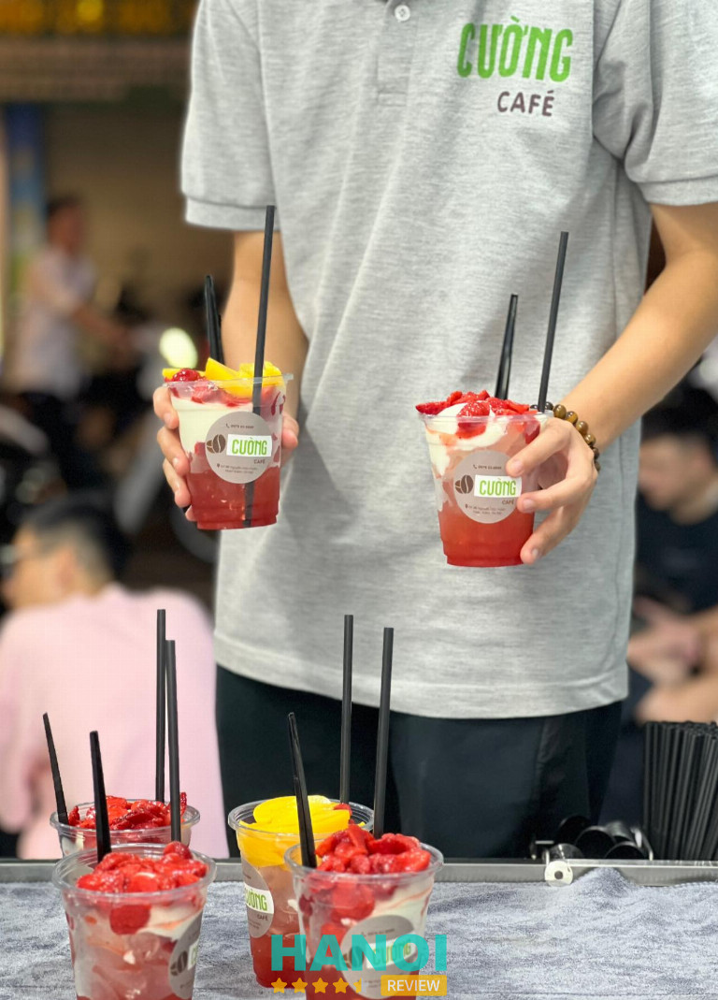
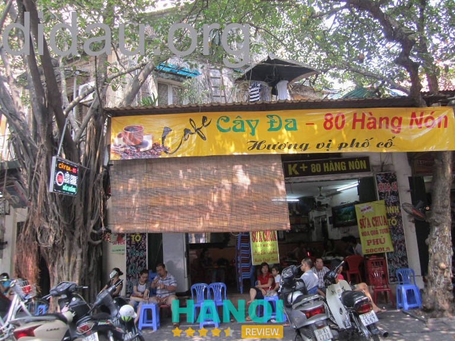
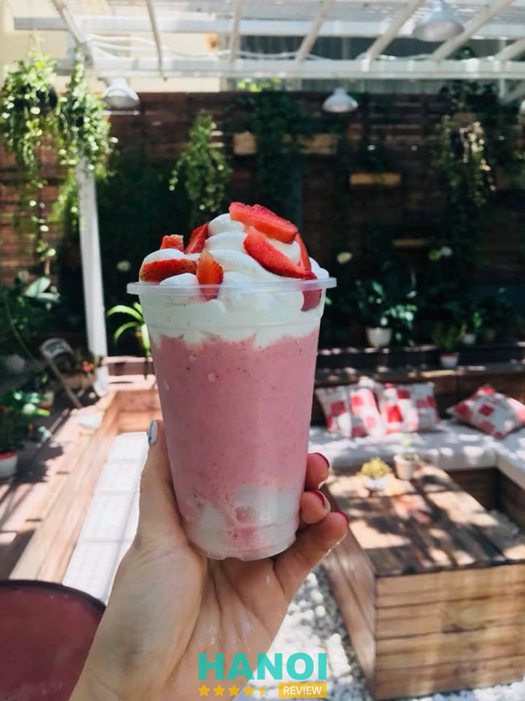
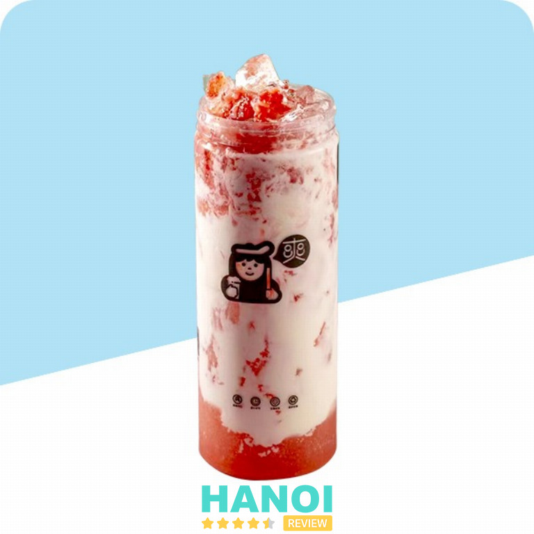
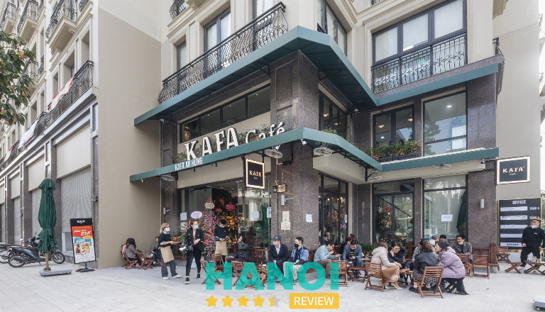
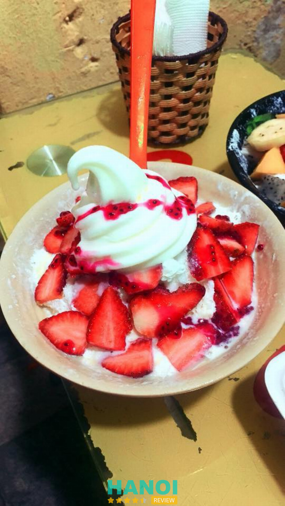
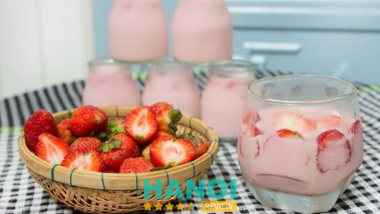

10 Quán sữa chua dâu tây tại Hà Nội tươi ngon, giá hợp lý
Nếu bạn đang tìm kiếm hương vị ngọt ngào, mát lạnh và tươi mới giữa lòng thủ đô, những quán sữa chua dâu tây tại Hà Nội chắc chắn sẽ khiến bạn mê mẩn. Với sự kết hợp hoàn hảo giữa sữa chua mịn và dâu tây mọng nước, đây là món ăn nhẹ lý tưởng cho mọi lứa tuổi, mang đến cảm giác sảng khoái và dễ chịu.
Top 10 Quán sữa chua dâu tây tại Hà Nội không thể bỏ qua
Các quán sữa chua dâu tây tại Hà Nội không chỉ hấp dẫn bởi hương vị mà còn mang lại không gian thư giãn, phù hợp để thưởng thức và check-in dễ thương.
Café Tuấn – Hoàn Kiếm
Nằm ngay trên con phố Nguyễn Hữu Huân – con đường nổi tiếng với nhiều quán cà phê lâu đời, Café Tuấn là một địa điểm được nhiều bạn trẻ tìm đến khi muốn thưởng thức sữa chua dâu tây tại Hà Nội. Với hơn 10 năm hoạt động, quán đã trở thành điểm hẹn quen thuộc của những tín đồ yêu vị chua ngọt tự nhiên, mát lạnh của sữa chua và trái cây tươi.

Không gian quán mang phong cách gần gũi, giản dị, nhưng vẫn toát lên nét tinh tế rất riêng. Mỗi ly sữa chua dâu tây tại Hà Nội ở đây đều được chế biến tỉ mỉ, sử dụng nguồn sữa chua lên men chuẩn vị, kết hợp cùng hoa quả tươi mỗi ngày như dâu tây, xoài, kiwi, nho… tạo nên hương vị thanh mát, hấp dẫn khó quên.
Một số món được yêu thích tại Café Tuấn:
- Sữa chua dẻo dâu tây
- Sữa chua dẻo hoa quả tổng hợp
- Sữa chua dẻo ca cao
- Cà phê truyền thống, bạc xỉu, sinh tố trái cây
Giá cả tại quán vô cùng hợp lý, phù hợp với học sinh, sinh viên và dân văn phòng. Dù nằm ngay trung tâm phố cổ, không gian ở Café Tuấn vẫn mang lại cảm giác yên bình, nhẹ nhàng – nơi dừng chân lý tưởng giữa lòng Hà Nội nhộn nhịp.
Nếu đang tìm một quán sữa chua dâu tây tại Hà Nội có hương vị tự nhiên và không khí thân thiện, Café Tuấn chắc chắn là lựa chọn đáng thử.
Thông tin liên hệ:
- Địa chỉ: 37 P. Nguyễn Hữu Huân, Hàng Bạc, Hoàn Kiếm, Hà Nội
- Điện thoại: 0914 122 115
Zai – Coffee, tea & yogurt – Hoàn Kiếm
Giữa con phố Nguyễn Hữu Huân nhộn nhịp, Zai – Coffee, tea & yogurt là điểm dừng chân quen thuộc của những ai yêu thích hương vị thanh mát và tự nhiên. Với vị trí thuận lợi ngay trung tâm Hoàn Kiếm, quán nhanh chóng được biết đến như một trong những quán sữa chua dâu tây ở Hà Nội được giới trẻ yêu thích. Không gian ấm cúng, nhẹ nhàng cùng phong cách phục vụ thân thiện giúp nơi đây luôn để lại ấn tượng tốt đẹp với khách ghé thăm.

Zai không chỉ thu hút bởi ly sữa chua dâu tây tươi mát, mà còn nổi bật với menu đa dạng từ cà phê, trà trái cây cho đến sữa chua hoa quả dẻo mịn. Mỗi món đều được pha chế kỹ lưỡng, giữ trọn hương vị tự nhiên của nguyên liệu tươi ngon. Giá cả hợp lý, phù hợp với học sinh – sinh viên lẫn dân công sở muốn tìm một góc nhỏ thư giãn giữa lòng phố cổ.
Một vài món nổi bật tại quán:
- Sữa chua dâu tây thơm ngon, vị ngọt dịu.
- Trà hoa quả tươi mát, bắt vị.
- Cà phê rang xay đậm đà, chuẩn vị Hà Nội.
- Sữa chua mix topping đa dạng: kiwi, xoài, nha đam…
Không chỉ là nơi thưởng thức đồ uống ngon, Zai còn là chốn hẹn hò, gặp gỡ lý tưởng với bạn bè. Hương vị đặc trưng cùng không gian dễ thương khiến quán luôn nằm trong danh sách yêu thích của nhiều thực khách. Nếu đang tìm quán sữa chua dâu tây ở Hà Nội, Zai – Coffee, tea & yogurt chắc chắn là lựa chọn đáng thử.
Thông tin liên hệ:
- Địa chỉ: 48 Nguyễn Hữu Huân, Lý Thái Tổ, Hoàn Kiếm, Hà Nội
- Điện thoại: 0326 238 388
- Facebook: fb.com/100093152300789
GỢI Ý: 10 Quán cafe Acoustic tại Hà Nội nhạc cực chill, view siêu đẹp
Cường Cafe – 189 Giảng Võ
Nếu nói về món sữa chua dâu tây Hà Nội, cái tên Cường Cafe hẳn là điểm đến không thể bỏ lỡ của những tín đồ yêu vị chua ngọt tự nhiên. Nằm ngay trên con phố Giảng Võ nhộn nhịp, quán mang phong cách mộc mạc nhưng luôn đông khách, đặc biệt vào những ngày hè nóng nực. Hương vị sữa chua dâu tây ở đây đã trở thành “thương hiệu riêng” khiến ai thử qua cũng khó quên.

Món sữa chua dâu tây tại Cường Cafe được gọi vui là “thức quà cho những đứa nghiện dâu”. Dâu tây tươi được cắt lát mỏng, phủ kín mặt cốc sữa chua mịn mát, tạo nên sự kết hợp hài hòa giữa vị chua thanh và ngọt dịu. Không quá cầu kỳ nhưng mỗi ly lại mang đến cảm giác tươi mới, dễ chịu và sảng khoái.
Một số điểm nổi bật của sữa chua dâu tây Hà Nội – Cường Cafe:
- Dâu tây Đà Lạt tươi mới mỗi ngày, màu đỏ tự nhiên bắt mắt.
- Sữa chua làm thủ công, dẻo mịn, vị chua vừa phải.
- Giá chỉ từ 25.000 – 40.000 đồng, phù hợp cho học sinh, sinh viên.
- Không gian quán giản dị, ấm cúng, dễ dàng tụ tập bạn bè.
- Nhân viên phục vụ nhanh, thân thiện và luôn nhiệt tình.
Giữa tiết trời oi bức của Hà Nội, ngồi nhâm nhi một ly sữa chua dâu tây mát lạnh tại Cường Cafe thật sự là một trải nghiệm tuyệt vời. Hương vị hòa quyện tự nhiên cùng không khí vui vẻ của quán chắc chắn sẽ khiến thực khách nhớ mãi.
Thông tin liên hệ:
- Địa chỉ: 189 Giảng Võ, Hà Nội
- Điện thoại: 0979 838 886
- Facebook: fb.com/Cuongcafe
Cây Đa Quán – Hoàn Kiếm
Nằm ngay trung tâm phố cổ, Cây Đa Quán là điểm dừng chân quen thuộc của những ai yêu vị ngọt thanh, mát lạnh của sữa chua hòa quyện cùng dâu tây tươi. Quán được nhiều bạn trẻ biết đến như “thánh địa của tín đồ nghiện dâu”, với không gian nhỏ xinh, thoang thoảng hương dâu dễ chịu, tạo cảm giác gần gũi và thư giãn.

Hơn một thập kỷ phục vụ, quán đã trở thành thương hiệu quen thuộc tại Hà Nội. Món sữa chua dâu tây tại đây được chế biến thủ công mỗi ngày, giữ trọn độ béo nhẹ của sữa chua và hương dâu tự nhiên, không quá ngọt, không gắt, ăn một lần là nhớ mãi. Ngoài ra, quán còn phục vụ nhiều món sữa chua biến tấu thú vị như:
- Sữa chua dẻo xắt miếng Cacao – hương vị béo ngậy, thơm dịu.
- Sữa chua hoa quả tổng hợp – tươi mát và tràn đầy năng lượng.
- Sữa chua nha đam mật ong – thanh nhẹ, dễ ăn và tốt cho da.
Điểm đặc biệt là mọi nguyên liệu đều được chọn lọc kỹ, dâu tây tươi nhập mỗi ngày từ vùng cao nguyên, kết hợp công thức ủ sữa truyền thống giúp món ăn luôn giữ được hương vị đặc trưng. Giá cả hợp lý, phục vụ nhanh chóng, thân thiện – chính là điều khiến thực khách quay lại nhiều lần.
Thông tin liên hệ:
- Địa chỉ: Số 3 Đường Thành, Hoàn Kiếm, Hà Nội
- Điện thoại: 0934 221 970
- Email: Quyphuoc.tran@gmail.com
- Facebook: fb.com/Cayda80
RoyalTea – Thanh Xuân
RoyalTea là một trong những địa điểm được giới trẻ yêu thích khi nhắc đến các quán sữa chua dâu tây tại Hà Nội. Tọa lạc tại vị trí trung tâm khu dân cư sầm uất, quán nổi bật với không gian hiện đại, trẻ trung và cực kỳ “chill”. Nơi đây luôn thu hút đông đảo khách ghé đến thưởng thức, từ học sinh, sinh viên cho đến dân văn phòng tìm chốn thư giãn cuối ngày.

Điểm ấn tượng nhất tại RoyalTea không chỉ nằm ở không gian mà còn ở chất lượng đồ uống. Mỗi ly đều được pha chế tỉ mỉ, giữ trọn vị tươi mát và thanh nhẹ. Sữa chua dâu tây là món “must try” mà ai đến cũng nên thử ít nhất một lần — hương vị chua nhẹ kết hợp cùng dâu tây tươi và sữa chua mềm mịn, tạo nên cảm giác mát lành, khó quên.
Những điều khiến thực khách yêu thích RoyalTea:
- Menu đa dạng: từ trà sữa, trà trái cây, sữa chua đến đá xay.
- Đồ uống được trang trí bắt mắt, hợp “gu” sống ảo.
- Nhân viên phục vụ thân thiện, nhiệt tình.
- Không gian thoáng đãng, dễ chịu, thích hợp để trò chuyện hoặc làm việc.
Nếu đang tìm kiếm một địa chỉ thưởng thức sữa chua dâu tây tại Hà Nội vừa ngon vừa đẹp, RoyalTea chắc chắn là gợi ý không nên bỏ qua. Hương vị hấp dẫn, phong cách phục vụ chuyên nghiệp và không gian lý tưởng khiến nơi đây trở thành điểm đến được yêu thích quanh năm.
Thông tin liên hệ:
- Địa chỉ: 307 Vũ Tông Phan, Hà Nội
- Điện thoại: 0967 508 026
- Email: Royateamienbac@gmail.com
- Facebook: fb.com/RoyalTeaHK
THAM KHẢO: 10 Quán salad ở Hà Nội tươi ngon, healthy và đáng thử nhất
Trà sữa Shuangyangyang – Hoàng Mai
Giữa lòng Hà Nội, Trà sữa Shuangyangyang là điểm hẹn quen thuộc của những tín đồ yêu thích hương vị ngọt ngào và tươi mát. Nằm tại vị trí thuận tiện trên phố Kim Đồng, quán thu hút thực khách bởi không gian trẻ trung, năng động cùng những món đồ uống đậm chất riêng. Với phong cách phục vụ thân thiện và hương vị đồ uống chất lượng, nơi đây ngày càng trở thành điểm đến được yêu thích của giới trẻ thủ đô.

Không chỉ nổi tiếng với các loại trà trái cây tươi, Shuangyangyang còn đặc biệt được nhớ đến nhờ món sữa chua dâu tây thơm ngon, hấp dẫn. Vị ngọt dịu được chiết xuất từ hoa quả tự nhiên, hòa quyện cùng lớp sữa chua mịn màng, tạo nên trải nghiệm vị giác khó quên.
Các nguyên liệu được chọn lọc kỹ càng, từ trà cao cấp cho đến mứt hoa quả trứ danh, tất cả đều mang lại cảm giác tươi mới trong từng ly đồ uống.
Một số lựa chọn được yêu thích tại quán:
- Sữa chua dâu tây thơm béo, vị chua ngọt hài hòa
- Trà đào cam sả thanh mát
- Trà vải hoa nhài dịu nhẹ
- Sữa tươi trân châu đường đen đậm đà
Không chỉ là nơi thưởng thức đồ uống, Shuangyangyang còn là điểm check-in được nhiều bạn trẻ lựa chọn. Hương vị đặc trưng cùng phong cách phục vụ tận tâm giúp quán khẳng định vị thế giữa vô vàn quán sữa chua dâu tây tại Hà Nội.
Thông tin liên hệ:
- Địa chỉ: 1 Phố Kim Đồng, Giáp Bát, Hoàng Mai, Hà Nội
- Điện thoại: 0966 859 057
- Email: shuangyangyangvn@gmail.com
- Website: shuangyangyang.com
- Facebook: fb.com/ShuangYangYang
KAFA Café – Hai Bà Trưng
KAFA Café là một trong những chuỗi cà phê mang đậm phong vị đường phố Việt Nam, nơi lưu giữ trọn vẹn hương vị quen thuộc và gần gũi của ly cà phê sữa đá Hà Nội xưa. Quán nằm tại khu vực yên tĩnh, dễ tìm, thích hợp để ngồi thư giãn, trò chuyện hoặc làm việc. Không gian của KAFA vừa mộc mạc, vừa hiện đại, thu hút cả giới trẻ và những người yêu thích phong cách café truyền thống Việt.

Bên cạnh các món cà phê đậm đà, KAFA Café còn nổi bật với sữa chua dâu tây tại Hà Nội – món giải khát được nhiều khách hàng yêu thích. Sữa chua ở đây có độ dẻo mịn tự nhiên, kết hợp cùng dâu tây tươi ngọt nhẹ, mang đến hương vị thanh mát và dễ chịu. Đây là món ăn nhẹ hoàn hảo cho những ai muốn đổi vị sau bữa ăn hoặc tìm kiếm cảm giác tươi mới trong những ngày nắng.
Một số lựa chọn hấp dẫn tại KAFA Café:
- Sữa chua dâu tây tươi mát, vị ngọt thanh.
- Cà phê pha phin truyền thống.
- Trà đào cam sả, nước ép trái cây tươi.
- Không gian decor phong cách vintage, gần gũi.
Hương vị sữa chua dâu tây tại Hà Nội của KAFA Café không chỉ ngon mà còn mang nét tinh tế riêng, vừa thân thuộc vừa hiện đại. Dù đến để nhâm nhi ly cà phê hay thưởng thức món sữa chua dâu tây mát lạnh, mỗi vị khách đều sẽ tìm thấy cho mình một góc bình yên giữa lòng phố.
Thông tin liên hệ:
- Địa chỉ: 17 Lãng Yên, Thanh Lương, Hai Bà Trưng, Hà Nội
- Điện thoại: 0706 385 385
- Email: info@kafa.com.vn
- Website: kafa.com.vn
- Facebook: fb.com/KafaVietnam
Sữa Chua Trân Châu Cô Thỏ – Cầu Giấy
Sữa Chua Trân Châu Cô Thỏ Cơ Sở 9 là điểm đến lý tưởng cho những tín đồ ẩm thực tại Cầu Giấy, Hà Nội. Nằm tại vị trí dễ tìm, quán nổi tiếng với món sữa chua trân châu và đặc biệt là sữa chua dâu tây tươi mát. Quán đã khẳng định được uy tín và chất lượng sản phẩm, trở thành một trong những quán sữa chua dâu tây ở Hà Nội được yêu thích.
Mùa dâu tây về, hương vị dâu tây thơm lừng kết hợp hoàn hảo cùng sữa chua nhà Thỏ tạo nên món tráng miệng vừa ngon miệng vừa bổ dưỡng. Dâu tây giàu chất chống oxy hóa, vitamin A, C và Kali, trong khi sữa chua cung cấp protein và canxi dồi dào. Sự kết hợp này mang lại nhiều lợi ích cho sức khỏe, tăng cường miễn dịch.
Quán phục vụ đa dạng các món sữa chua với topping hấp dẫn, nổi bật như:
- Sữa chua dâu tây tươi
- Sữa chua trân châu
- Các loại topping sữa béo ngậy (kem, mật ong)
- Menu được cập nhật theo mùa trái cây
Hãy để Sữa chua nhà Thỏ làm mới thực đơn dinh dưỡng mỗi ngày của bạn. Một lựa chọn tuyệt vời để tận hưởng hương vị dâu tây đang vào mùa và thưởng thức món sữa chua chất lượng. Chỉ cần order qua app, món sữa chua dâu mát lạnh sẽ được giao đến tận nơi!
Thông tin liên hệ:
- Địa chỉ: 103 khu tập thể trường múa Việt Nam, Mai Dịch, Cầu Giấy, Hà Nội
- Điện thoại: 0355 607 487
- Email: Trangmi128@gmail.com
- Facebook: fb.com/SuaChuaTranChaucothonguyenhoang
THAM KHẢO: 7 Quán vịt om sấu ở Hà Nội nổi tiếng, hương vị thơm ngon khó quên
Hoa Quả Dầm Hoa Béo – Hoàn Kiếm
Tọa lạc trên con phố Tô Tịch nổi tiếng, Hoa Quả Dầm Hoa Béo là địa chỉ quen thuộc của những tín đồ yêu thích món hoa quả dầm và sữa chua dâu tây tại Hà Nội. Nhiều năm qua, quán đã trở thành điểm dừng chân yêu thích của người dân địa phương và du khách nhờ hương vị tươi ngon, chất lượng ổn định và không khí thân thiện, gần gũi.

Mỗi ly hoa quả dầm Hoa Béo là sự hòa quyện hoàn hảo giữa trái cây tươi theo mùa, sữa đặc béo ngậy và đá mát lạnh. Đặc biệt, món sữa chua dâu tây ở đây được nhiều người đánh giá là “ngon khó quên” với vị chua dịu tự nhiên của sữa chua hòa cùng dâu tây ngọt mọng, tạo nên hương vị vừa mát lành vừa hấp dẫn. Giá cả tại quán cũng rất phải chăng, phù hợp với học sinh, sinh viên và khách du lịch.
Một số món được yêu thích tại Hoa Béo:
- Hoa quả dầm truyền thống
- Sữa chua dâu tây tươi
- Caramen hoa quả
- Nước ép trái cây nguyên chất
- Sinh tố mix hoa quả
Không gian của quán tuy nhỏ nhưng luôn sạch sẽ, ấm cúng và rộn ràng tiếng cười. Cách phục vụ nhanh nhẹn, vui vẻ khiến khách hàng luôn cảm thấy dễ chịu khi ghé thăm.
Hoa Quả Dầm Hoa Béo xứng đáng là một trong những điểm đến nổi bật khi nhắc đến hoa quả dầm và sữa chua dâu tây tại Hà Nội. Nếu muốn thưởng thức hương vị ngọt lành, tươi mới giữa lòng phố cổ, đừng quên ghé Hoa Béo nhé!
Thông tin liên hệ:
- Địa chỉ: 17 Tô Tịch, Hoàn Kiếm, Hà Nội
- Điện thoại: 0989 110 289
- Email: minhngocnguyen3112@gmail.com
- Facebook: fb.com/hoaquadamhoabeothanhnhan
Sữa chua Cô Tuyết – Ba Đình
Ra đời từ năm 1990, Sữa chua Cô Tuyết đã trở thành cái tên quen thuộc với người dân khu Kim Mã Thượng và cả những tín đồ mê quán sữa chua dâu tây tại Hà Nội. Tồn tại hơn ba thập kỷ, quán vẫn giữ được hương vị truyền thống đặc trưng – mát lạnh, dẻo mịn và thanh nhẹ, khiến ai đã thử một lần đều nhớ mãi. Nằm ngay tại trung tâm quận Ba Đình, vị trí thuận tiện giúp thực khách dễ dàng ghé qua thưởng thức món ngon dân dã mà “chất lượng vượt thời gian”.

Điểm làm nên sức hút của Sữa chua Cô Tuyết chính là công thức chế biến được lưu truyền từ những năm 90, kết hợp nguyên liệu tươi sạch và quy trình ủ sữa chuẩn vị truyền thống. Ngoài món sữa chua trắng thơm béo, quán còn nổi bật với sữa chua dâu tây, vị ngọt thanh tự nhiên, hòa quyện cùng độ dẻo mềm của sữa – món ăn vừa ngon vừa mát, thích hợp cho mọi lứa tuổi.
Thực khách yêu thích nơi đây bởi:
- Hương vị sữa chua chuẩn “ngon – bổ – rẻ”.
- Không gian nhỏ xinh, giản dị, gợi nhớ Hà Nội xưa.
- Phục vụ thân thiện, nhanh nhẹn.
- Menu phong phú: sữa chua hoa quả, sữa chua đánh đá, sữa chua dâu tây, cacao…
Sữa chua Cô Tuyết không chỉ là một quán ăn vặt quen thuộc mà còn là ký ức tuổi thơ của bao người Hà Nội. Giữa nhịp sống hiện đại, nơi đây vẫn giữ trọn hương vị truyền thống, trở thành điểm đến lý tưởng cho ai đang tìm kiếm quán sữa chua dâu tây tại Hà Nội chuẩn vị, giá hợp lý và đáng tin cậy.
Thông tin liên hệ:
- Địa chỉ: 10 Kim Mã Thượng, Ba Đình, Hà Nội
- Điện thoại: 0975 106 127
- Facebook: fb.com/suachuabachtuyet
Tiêu chí chọn quán sữa chua dâu tây ở Hà Nội ngon và chất lượng
Để chọn được quán sữa chua dâu tây tại Hà Nội ưng ý, bạn nên dựa vào những yếu tố sau giúp đảm bảo hương vị, chất lượng và trải nghiệm.
- Nguyên liệu tươi ngon: Dâu tây phải đỏ mọng, sữa chua được làm từ sữa tươi nguyên chất, đảm bảo vị chua nhẹ, ngọt thanh và thơm béo tự nhiên.
- Không gian sạch đẹp: Quán nên có không gian thoáng mát, bàn ghế sạch sẽ, mang đến cảm giác thoải mái và dễ chịu cho thực khách khi thưởng thức.
- Giá cả hợp lý: Mức giá phù hợp với chất lượng sản phẩm, giúp khách hàng dễ dàng lựa chọn mà không lo tốn kém quá nhiều.
- Phục vụ tận tình: Nhân viên thân thiện, nhanh nhẹn và niềm nở luôn là điểm cộng lớn, khiến khách hàng cảm thấy được chào đón.
- Đánh giá tốt từ khách hàng: Nên ưu tiên những quán có phản hồi tích cực, được nhiều người yêu thích và thường xuyên quay lại.
- Vị trí thuận tiện: Quán nên nằm ở khu vực dễ tìm, có chỗ để xe tiện lợi, phù hợp cho cả nhóm bạn hoặc gia đình.
- Trang trí hấp dẫn: Món sữa chua dâu tây được bày biện đẹp mắt, có thêm topping phong phú như ngũ cốc, thạch, mật ong tạo điểm nhấn riêng.
Những quán sữa chua dâu tây tại Hà Nội luôn mang đến hương vị ngọt ngào và tươi mát, khiến bất cứ ai cũng muốn quay lại nhiều lần. Dù bạn muốn thư giãn, gặp gỡ bạn bè hay tìm món ăn vặt nhẹ nhàng, đây đều là lựa chọn hoàn hảo. Hãy thử một ly sữa chua dâu tây ngay hôm nay để cảm nhận vị ngon tự nhiên khó cưỡng!
Có thể bạn quan tâm
- 11 Quán bánh ngọt ở Hà Nội nổi bật với hương vị tuyệt hảo
- 5 Shop custom giày tại Hà Nội chuyên nghiệp, dịch vụ tốt nhất
- 13 Quán cà phê bánh ở Hà Nội nổi bật, trải nghiệm ngon khó quên
- 7 Địa chỉ ship nước ép trái cây ở Hà Nội tươi ngon, tốt cho sức khỏe
DOANH NGHIỆP: Đăng tải thông tin MIỄN PHÍ.
Tin đọc nhiều


10 Quán sushi ngon ở Hà Nội khiến thực khách mê mẩn vị tinh tế
Thủ đô không chỉ nổi tiếng với ẩm thực truyền thống mà còn là thiên đường của sushi tươi ngon. Những quán sushi ngon tại...

7 Nhà hàng ở Quang Trung Hà Nội ngon nổi tiếng
Nếu bạn đang tìm kiếm những nhà hàng ở Quang Trung Hà Nội vừa ngon, vừa có không gian sang trọng thì nơi đây chính...

10 Quán cafe làm việc ở Hà Nội yên tĩnh, wifi mạnh, giá hợp lý
Bạn đang tìm quán cafe làm việc ở Hà Nội có không gian yên tĩnh, wifi ổn định, đồ uống ngon và giá cả hợp...

10 Quán chả cá Lã Vọng ở Hà Nội ngon chuẩn vị, phục vụ nhanh
Chả cá Lã Vọng là món ăn truyền thống đặc sắc của Hà Nội, thu hút đông đảo thực khách nhờ hương vị đậm đà,...

Trở thành người đầu tiên bình luận cho bài viết này!